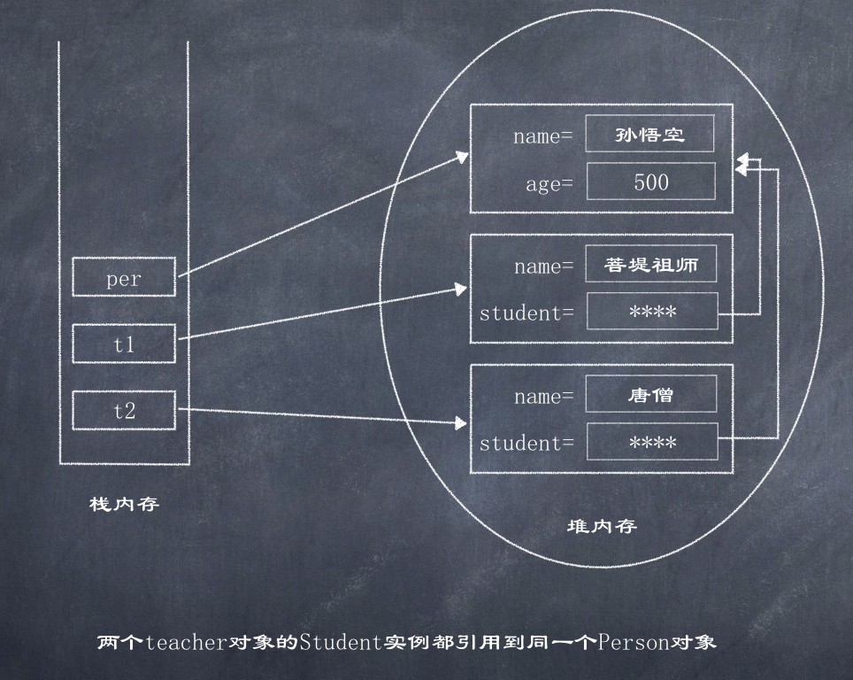
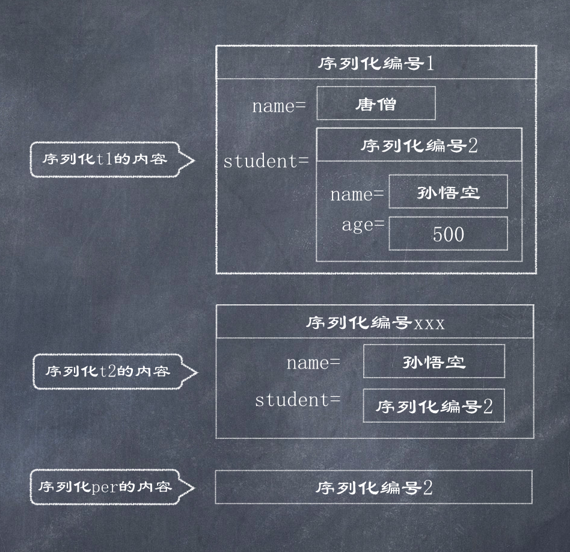

对象引用的序列化
如果某个类的成员变量的类型不是基本类型或String类型, 而是引用类型, 则这个引用类必须是可序列化的, 否则拥有该类型成员变量的类也是不可序列化的
如下Teacher类持有一个Person类的引用, 只有Person类是可序列化的, Teacher类才可以是可序列化的.
public class Teacher implements java.io.Serializable {
private String name;
private Person person;
public Teacher(String name, Person person) {
this.name = name;
this.person = person;
}
//... getters & setters
}
当程序序列化一个Teacher对象时, 如果该Teacher对象持有一个Person对象的引用, 为了在反序列化时可以正常恢复该Teacher对象, 程序会顺带将该Person对象也进行序列化, 所以Person类也必须是可序列化的, 否则Teacher类将不可序列化.
序列化编号
现在假设有如下一种特殊情形, 有两个Teacher对象, 它们的student实例变量都引用同一个Person对象, 而且该Person对象还有一个引用变量引用它:
Person per = new Person("孙悟空", 500);
Teacher t1 = new Teacher("唐僧", per);
Teacher t2 = new Teacher("菩提祖师", per);

于是, 产生了一个问题: 如果先序列化t1对象, t1所引用的Person对象一起序列化; 如果再序列化t2对象, 系统一样会序列化该Person对象, 如果再显示序列化per对象, 系统将再次序列化该Person对象, 那么这个过程似乎会向输出流中输出三个Person对象, 如果是这样, 那么当反序列化时将会得到三个Person对象, 从而引起t1.student不等于 t2.student, 这就违背了Java序列化的初衷.
为了解决这种问题, Java序列化机制采用了一种特殊的序列化算法:
- 所有保存到磁盘中的对象都有一个序列化编号
- 当程序试图序列化一个对象时, 程序将先检查该对象是否已经被序列化过, 只有该对象从未(在本次虚拟机中)被序列化过, 系统才会将该对象转换成字节序列并输出
- 如果某个对象已经序列化过, 程序将只是直接输出一个序列化编号, 而不是再次重新序列化该对象
根据上面序列化算法, 可以得到一个结论 ---- 当第二次, 第三次序列化Person对象时, 程序不会再次将Person对象转换成字节码并输出, 而是仅仅输出一个序列化编号, 假设有如下顺序的序列化代码:
objectOutputStream.writeObject(t1);
objectOutputStream.writeObject(t2);
objectOutputStream.writeObject(per);
通过该机制可知, 当多次调用writeObject()方法输出同一个对象时, 只有第一次才会将该对象转换成字节序列并输出

Person.java
import java.io.Serializable;
public class Person implements Serializable {
private String name;
private int age;
public Person(String name, int age) {
this.name = name;
this.age = age;
}
public String getName() {
return name;
}
public void setName(String name) {
this.name = name;
}
public int getAge() {
return age;
}
public void setAge(int age) {
this.age = age;
}
}
Teacher.java
public class Teacher implements java.io.Serializable {
private String name;
private Person student;
public String getName() {
return name;
}
public void setName(String name) {
this.name = name;
}
public Person getStudent() {
return student;
}
public void setStudent(Person student) {
this.student = student;
}
public Teacher(String name, Person person) {
this.name = name;
this.student = person;
}
}
Test.java
import java.io.*;
public class Test {
public static void main(String[] args) {
write();
read();
}
private static void write() {
try (ObjectOutputStream outStream = new ObjectOutputStream(new FileOutputStream("teacher.txt"))) {
Person per = new Person("孙悟空", 500);
Teacher t1 = new Teacher("唐僧", per);
Teacher t2 = new Teacher("菩堤老祖", per);
// 依次将4个对象写入输出流
outStream.writeObject(t1);
outStream.writeObject(t2);
outStream.writeObject(per);
outStream.writeObject(t2);
} catch (IOException e) {
e.printStackTrace();
}
}
private static void read() {
try (ObjectInputStream inStream = new ObjectInputStream(new FileInputStream("teacher.txt"))) {
// 和写入顺序一致
// 依次读取ObjectInputStream输入流中的4个对象
Teacher t1 = (Teacher) inStream.readObject();
Teacher t2 = (Teacher) inStream.readObject();
Person per = (Person) inStream.readObject();
Teacher t3 = (Teacher) inStream.readObject();
System.out.println(t1.getStudent() == per); // true
System.out.println(t2.getStudent() == per); // true
System.out.println(t2 == t3); // true
} catch (IOException | ClassNotFoundException e) {
e.printStackTrace();
}
}
}
序列化机制问题
由于Java序列化的机制使然: 如果多次序列化同一个Java对象, 只有第一次序列化时才会把Java对象转换成字节序列并输出, 这样可能引起一个潜在的问题----当程序序列化一个可变对象时, 只有第一次使用writeObject()方法输出时才会将该对象转换成字节序列并输出, 当程序再次调用writeObject()方法时, 程序只是输出前面的序列化编号, 即使后面该对象的实例变量已改变, 改变的实例变量值也不会被输出
import java.io.FileInputStream;
import java.io.FileOutputStream;
import java.io.ObjectInputStream;
import java.io.ObjectOutputStream;
public class Test2 {
public static void main(String[] args) {
try (
// 注: input stream 放在前面会导致Crash: File not found
ObjectOutputStream oos = new ObjectOutputStream(new FileOutputStream("mutable.txt"));
ObjectInputStream ois = new ObjectInputStream(new FileInputStream("mutable.txt"))) {
Person per = new Person("孙悟空", 500);
oos.writeObject(per);
per.setName("八戒");
oos.writeObject(per);
Person p1 = (Person) ois.readObject();
Person p2 = (Person) ois.readObject();
System.out.println(p1 == p2); // true
System.out.println(p2.getName()); // 孙悟空
} catch (Exception e) {
e.printStackTrace();
}
}
}